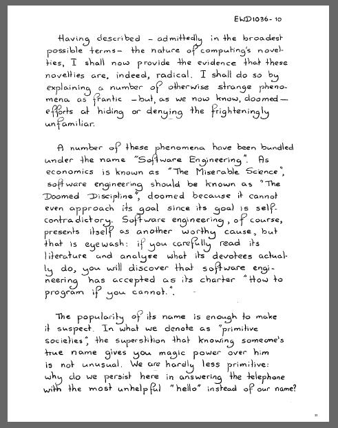

La disciplina condenada
Pienso que uno de los mejores argumentos en contra de la noción de crisis de software fue dada indirectamente por Edsger W. Dijkstra, en su charla de 1988 “ON THE CRUELTY OF REALLY TEACHING COMPUTIN SCIENCE”
Cierta cantidad de estos fenómenos han sido agrupados bajo el nombre de “Ingeniería de Software”. Así como la economía es conocida como “La Ciencia Miserable”,* la ingeniería de software debería ser conocida como “La Disciplina Condenada”, condenada porque ni siquiera puede acercarse a su meta, dado que la misma es en sí misma contradictoria. La ingeniería de software, por supuesto, se presenta a sí misma como otra causa valiosa, pero es un colirio: si lee cuidadosamente su literatura y analiza lo que realmente hacen quienes se avocan a ella, descubrirá que la ingeniería de software ha adoptado como su estatuto *“Cómo programar si usted no puede”.
...
La práctica está impregnada de la confortable ilusión de que los programas son simplemente dispositivos como cualquier otro, la única diferencia que se admite es que su fabricación pueden requerir un nuevo tipo de expertos, a saber: programadores. Desde allí hay sólo un pequeño paso hasta medir la “productividad del programador” en términos de la “cantidad de líneas producidas por mes”. Esta es una unidad de medida muy costosa, porque anima a escribir código insípido, pero hoy estoy menos interesado en qué tan tonta es una unidad, aún desde un punto de vista puramente empresarial. Mi punto hoy es que, si deseamos contar líneas de código, no deberíamos verlas como “líneas producidas”, sino como “líneas gastadas”: el sentido común actual es tan tonto como contabilizar esa cuenta del lado erróneo del balance.
Además de la noción de productividad, también el control de calidad sigue estando distorsionado por la confortable ilusión de que funciona con otros aparatos como lo hace con los programas. Han pasado ya dos décadas desde que se señaló que el testing de programas puede convincentemente demostrar la presencia de errores, pero nunca puede demostrar su ausencia. Después de citar devotamente este comentario bien publicitado, el ingeniero de software vuelve al orden del día y continúa refinando sus estrategias de testing, tal como el alquimista de antaño, quien continuaba refinando sus purificaciones crisocósmicas.
Un profundo malentendido es luego revelado por el término “mantenimiento de software”, como resultado del cual muchas personas siguen creyendo que los programas -e inclusive los mismísimos lenguajes de programación- están sujetos a desgaste y ruptura. Su auto también necesita mantenimiento, ¿no es así? Es famosa la historia de la empresa petrolera que creía que sus programas PASCAL no durarían tanto como sus programas FORTRAN “porque PASCAL no estaba mantenido”.
En el mismo sentido debo llamar la atención sobre la sorprendente facilidad con que se ha aceptado la sugerencia de que los males de la producción de software de deben, en gran medida, a la falta de “herramientas de programación” apropiadas. (Pronto aparecería la frase “banco de trabajo del programador”.) Nuevamente, la chatura de la analogía subyacente se debe a la Edad Media. Las confrontaciones con las insípidas “herramientas” del tipo de “animación de algoritmos” no ha suavizado mi juicio; por el contrario, ha confirmado mi sospecha inicial de que estamos tratando principalmente con otra dimensión del negocio del aceite de serpientes.
Texto completo en castellano disponible en el sitio de Javier Smaldone.
Lo que no se entiende aún es que el desarrollo de software no es como la construcción de objetos, y esta naturaleza fundamentalmente distinta es la que lleva a errores al tratar de definir el éxito o fracaso de un proyecto de desarrollo de software.
